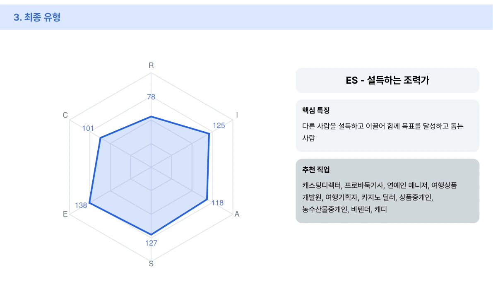
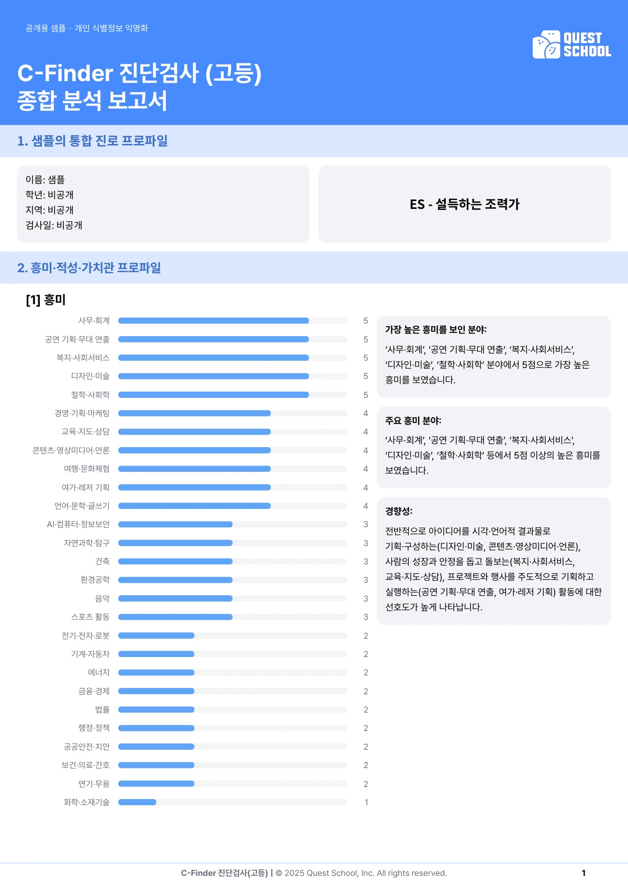
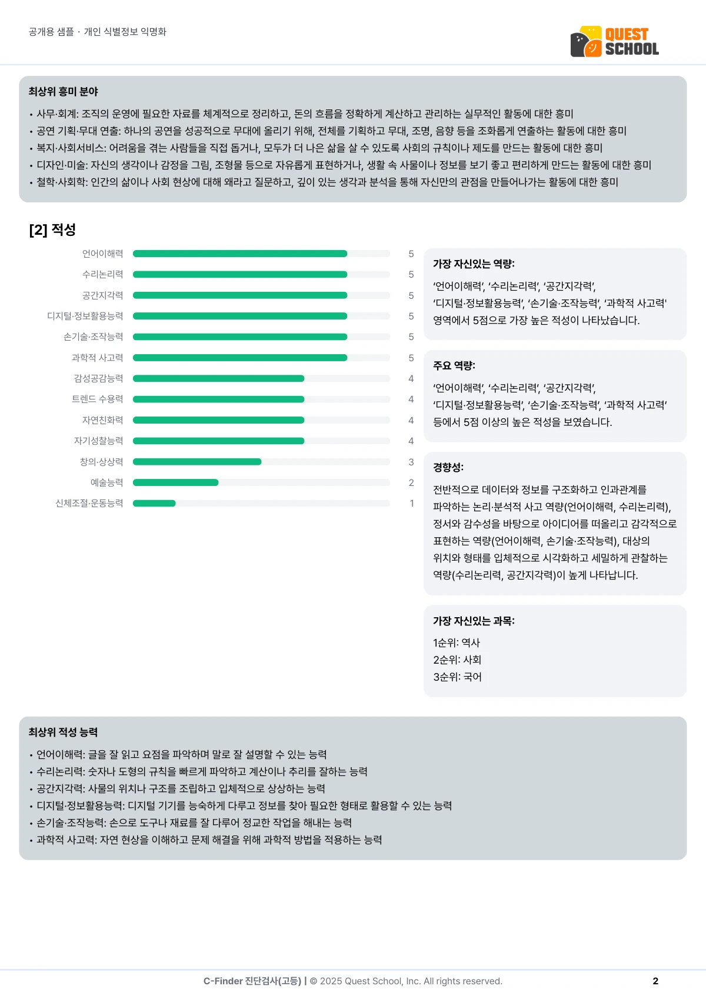
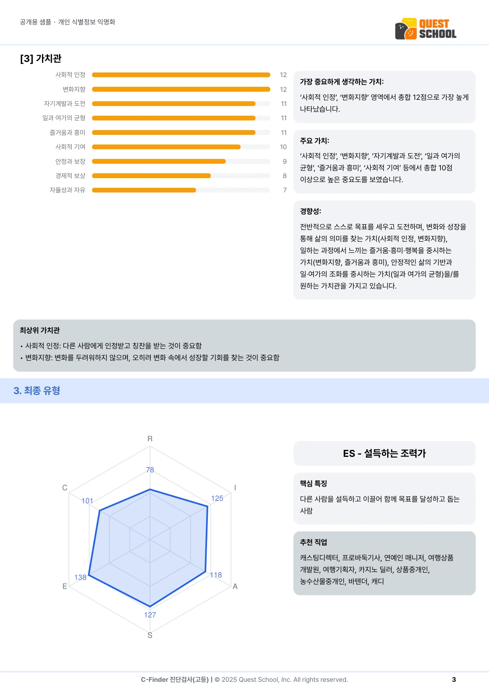

검사 시간
영역마다 따로 검사하면 응답에 많은 시간을 쓰게 됩니다. 결과를 이야기할 시간도 필요합니다.
중·고등학생을 위한 통합 진로검사
흥미·적성·가치관을 통합한 약 10분 진로검사.
중학생용·고등학생용 검사와 진로 유형·추천 직업 분석.
검사 화면 먼저 체험하기 3문항 데모결과에서 시작되는 진로 탐색

정식 검사 소요 시간 약 10분
흥미 · 적성 · 가치관
Holland 이론 기반 진로 유형
교실에서 시작한 질문
영역마다 따로 검사하면 응답에 많은 시간을 쓰게 됩니다. 결과를 이야기할 시간도 필요합니다.
길게 이어지는 문항 앞에서 학생의 집중은 달라질 수 있습니다. 핵심을 살피는 구성이 중요합니다.
중학생과 고등학생은 이해하는 어휘와 진로 고민이 다릅니다. 학교급에 맞는 질문이 필요합니다.
C-Finder가 살피는 것
흥미·적성·가치관을 함께 살피는 약 10분의 단축형 검사입니다.
좋아하는 일
잘할 수 있는 일
중요하게 여기는 것
나를 이해하는 세 가지 관점
어휘 수준과 문항의 난이도 차이를 반영해 중학생용과 고등학생용을 따로 구성했습니다.
중학생의 어휘와 이해 수준을 고려한 문항
고등학생의 어휘와 이해 수준을 고려한 문항
하위 요인별 점수와 설명
나의 특성과 추천 직업
결과를 읽고, 관심 분야를 더 알아보기
실제 결과지 미리보기
고등학생용 샘플 결과지 3쪽을 직접 살펴보세요.



개인 표기는 익명화했습니다. 이미지 선택 시 PDF를 크게 볼 수 있습니다.
결과를 읽는 네 가지 포인트
어떤 활동과 분야에 관심을 느끼는지 하위 요인별로 확인합니다.
적성의 하위 요인과 해석을 보며 강점에 관해 이야기합니다.
진로를 선택할 때 중요하게 생각하는 가치관을 살펴봅니다.
Holland 이론을 바탕으로 진로 유형을 이해하고 탐색할 직업을 찾습니다.
검사를 만든 바탕
사자가온다(주)는 심리학 연구팀과 함께
학생을 위한 진로검사를 개발했습니다.
현실형·탐구형·예술형·사회형·진취형·관습형, 여섯 가지 진로 유형을 바탕으로 결과를 구성했습니다.
예비조사 결과를 분석해 문항을 검토하고, 핵심 정보를 살펴볼 수 있는 단축형 검사로 구성했습니다.
현직 진로교사의 자문을 받아 학생들이 이해하기 쉬운 문항과 결과지로 다듬었습니다.
중·고등학교 구분, 예상 인원, 희망 일정을 적어 문의합니다.
학교의 기기 환경과 학생 안내 방법, 필요한 결과 활용 범위를 확인합니다.
학생은 학교급에 맞는 온라인 검사에 응답합니다. 정식 검사 소요 시간은 약 10분입니다.
학생의 관심과 강점을 읽고 상담과 다음 진로 탐색의 주제로 활용합니다.
자주 묻는 질문
학급 단위로 이용하려면 참여 인원, 기기와 인터넷 환경, 희망 일정을 문의에 남겨주세요. 정식 검사는 약 10분을 기준으로 설계되어 있으며, 안내와 결과를 읽는 시간을 포함한 수업 운영 방식은 도입 시 함께 정합니다.
학생 결과의 열람과 공유 범위는 학교의 운영 방식과 개인정보 안내에 맞춰 정해야 합니다. 학생·교사·학부모 중 누구에게 어떤 결과를 제공하고 싶은지 도입 문의에 함께 알려주세요.
학교급과 예상 인원, 사용 목적을 알려주시면 비용과 가능한 신청 방식을 안내받을 수 있습니다. 학부모님은 문의 구분에서 ‘학부모’를 선택해 주세요.
실제 검사에 필요한 정보, 보관 기간과 결과 열람 권한은 검사 운영 방식에 맞는 개인정보 안내를 확인해야 합니다. 도입 전에 해당 내용을 요청해 주세요. 이 소개 페이지의 화면 체험은 학생 이름이나 연락처를 입력받지 않습니다.
흥미·적성·가치관의 특징과 추천 직업은 학생과 진로를 이야기하는 참고 자료로 활용할 수 있습니다. 학교생활기록부 기재는 담당 교사가 학생의 실제 활동과 학교의 기재 기준을 함께 검토해 판단해야 합니다.
재검사 횟수와 이용 기간은 도입 조건에 따라 확인이 필요합니다. 학기별 변화 관찰 등 재검사 목적이 있다면 문의에 적어주세요.
화면 체험은 학교급별 예시 문항 3개로 검사 진행 방식을 살펴보는 데모입니다. 응답에 따른 개인 점수나 진로 유형은 산출하지 않습니다. 정식 결과의 구성은 이 페이지의 샘플 PDF에서 확인할 수 있습니다.
함께 시작하는 진로교육
아래 내용을 작성하면 문의 메일 초안을 확인할 수 있습니다. 메일 앱에서 전송을 완료해 주세요.
메일 전송 전 확인
받는 사람: sajagaonda@gmail.com
메일 앱에서 전송을 완료해야 문의가 전달됩니다. 메일 앱이 연결되어 있지 않다면 내용을 복사해 보내주세요.